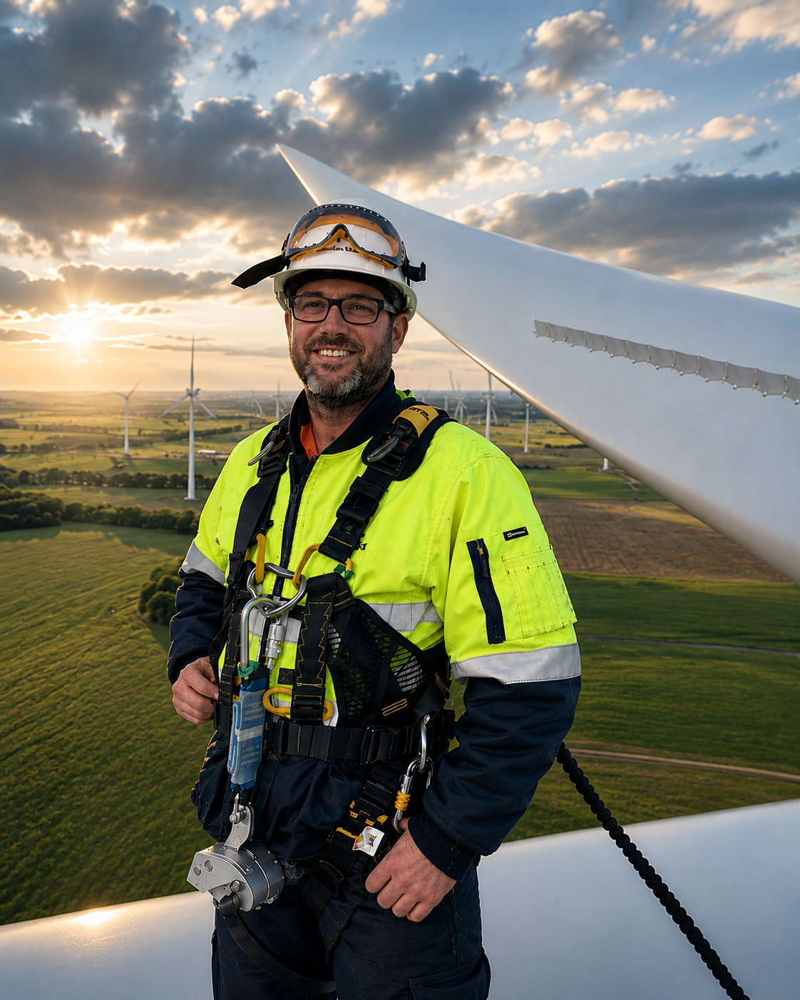
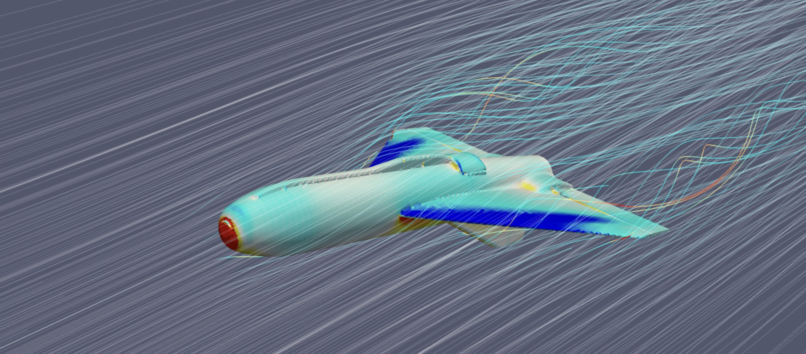

Bridging Precision and Visual Intelligence.
My career began in Multimedia and Graphic Design, a foundation that taught me how to distill complex information into intuitive, high-impact visuals. Over the last 13 years, I have pivoted this 'visual-first' mindset into the aerospace sector.
I don't just see drones as hardware; I see them as data-acquisition solutions. Whether it's architecting a Many-to-Many GCS or navigating high-voltage networks in GPS-denied environments, my goal is to bridge the gap between raw engineering and actionable commercial intelligence using advanced IMU, LiDAR, and Multispectral sensor arrays.

The Mission
"I specialize in scaling autonomous systems within high-stakes, regulated environments. My work ensures that when a Tier-1 client like BHP or Woodside needs data, the delivery is safe, BARS-compliant, and technically flawless."
13Y+
Innovation
6800H+
Command
Tier 1
Safety
BARS
Accredited
13 years across five domains.
R&D & Systems Engineering
VTRX VTOL airframe development, Balliyang synthetic LiDAR, custom GCS from scratch, ArduPilot Lua scripting, CFD pipeline automation, and open-source contributions to ArduPilot and QGroundControl.
View Projects →
Operations, Safety & Compliance
Chief Remote Pilot for 24+ pilots. BARS accreditation, CASA exemptions (MTO, eBVLOS, BVLOS-ROB, OONP), SORA applications, and one of Australia's first approved RePL training courses.
View Details → 03 — EmergencyEmergency Response & Public Safety
Real-time crowd monitoring for VicPol at the AFL Grand Final. Flood headwater tracking and post-disaster 3D assessment. ATAK/CoT situational awareness and Drone-in-a-Box persistent surveillance.
View Details → 04 — IndustrialIndustrial Inspection & Survey
Tier-1 delivery for BHP, Rio Tinto, Woodside, and Exxon. Mining volumes, digital twins, flare stack inspections, confined space operations, transmission network surveys, and solar farm mapping.
View Projects → 05 — EnvironmentEnvironment & Land Management
1,500+ wetlands surveyed for Brolga monitoring. AI-driven weed detection and prescriptive spray mapping. Forestry biomass estimation, carbon accounting, and NDVI analysis across regional Victoria.
View Projects →Flight & Control
- MR, VTOL & Fixed-Wing (to 25kg)
- GPS-Denied & Confined Space Ops
- Many-to-Many GCS Architecture
- Ardupilot, PX4 & DJI Ecosystems
Software & Integration
- SaaS Platform Deployment (Insite)
- Python, Node.js, SQL
- Flutter & C++ Development
- API & Sensor Integration
Visual & Sensor Intelligence
- LiDAR, Multispectral & IMU Sensors
- 3D Digital Twin Workflows
- Pix4D / RealityCapture
- QGIS / ESRI / Global Mapper
SafeSky Systems
Chief Remote Pilot & Solutions ArchitectLeading the development of Many-to-Many GCS solutions. Specialized in CFD airframe optimization and the integration of custom flight-stack firmware for autonomous clusters.
AUAV
Chief Remote Pilot // Project Lead: onSite // Operations ManagerLed the CASA certification pathway, safety assessments, and operational deployment of the onSite Drone-in-a-Box solution. Developed end-to-end workflows and managed the regulatory pathway to CASA ROB BVLOS approval.
National Drones
Solutions Consultant (Sales & Marketing)Technical consultant for marketing and sales agencies. Translated drone data capabilities into commercial visual assets.
AUAV
Senior R&D & Training SpecialistPioneered fixed-wing solutions and custom NIR MultiSpec payloads. Developed internal web-apps for GIS analysis.
Ascet Interactive
Art Director & Web DevelopmentThe foundation of my career. Led visual strategy and web development for major regional projects.